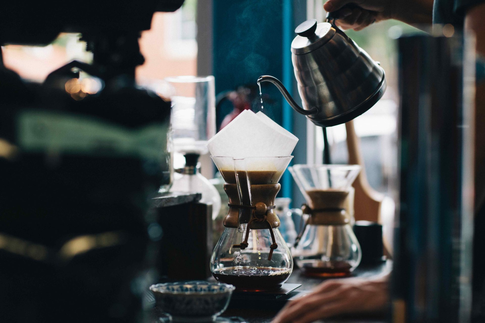

About Us
We aren’t just your typical coffee shop. We are a coffee shop that serves handcrafted drinks specially designed to match your zodiac signs, including your fire, earth, air, and water elements. The fire signs, which are Aries, Leo, and Sagittarius, are geared towards our hot drinks. The earth signs, which are Taurus, Virgo, and Capricorn, are our signature lattes with organic materials we have harvested from the earth. The air signs, which are Libra, Gemini, and Aquarius, are designed to represent their airiness through their topped milk foam and blended goodness. The water signs, which are Cancer, Scorpio, and Pisces, are represented by the water in the iced drinks.